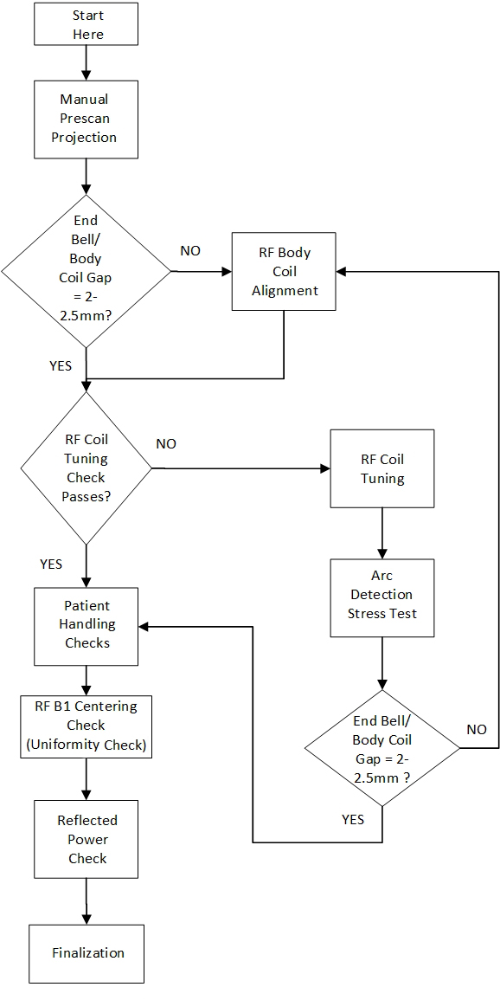

- 00000018WIA308EBE20GYZ
- id_131065003.2
- Dec 9, 2019 1:21:08 PM
MR 750 Body Coil Centering
Prerequisites
| Required persons | Preliminary requirements | Procedure | Finalization |
|---|---|---|---|
| 2 | Not Applicable | 8 hours each (only if coil alignment is necessary), 3 hours (if no coil alignment is necessary) minutes | Not Applicable |
| Item | Quantity | Effectivity | Part number | Manufacturer |
|---|---|---|---|---|
| Non-Magnetic Level — Non-Magnetic, approximately 90cm (3 ft) in length. | 1 | - | - | - |
| Non-Magnetic Level — Small non-magnetic level, approximately 7.5cm (3 inches) in length. | 1 | - | - | - |
| 3T Uniformity Phantom Kit | 1 | - |
5315746 — Order through your normal pooled tool ordering process. | - |
| Network Analyzer Service Tool | 1 | - |
5336593-2, or 5336593-3 — Order through your normal pooled tool ordering process. | - |
| Bridge Height Gauge | 1 | - |
5346292 — Part was shipped with the system. Also available as a FRU. | - |
| Gap Tool, End bell to Body Coil | 1 | - |
5391159 — Part available as FRU | - |
| Arc Detection Kit | 1 | - |
5401455-2 — Order through your normal pooled tool ordering process. ONLY if Body Coil Tuning is needed. | - |
| Field RF Coil Tuning Kit | 1 | - |
5311727 — Order through your normal pooled tool ordering process. ONLY if Body Coil Tuning is needed. | - |
| Software, RF Tuning Kit | 1 | - |
5352480 or 5535261 — Provided as part of Body Coil Tuning and Arc Detection Stress Test class. | - |
| Item | Quantity | Effectivity | Part number | Manufacturer |
|---|---|---|---|---|
| Tie wraps — Used to secure the elliptical drive cabling. | 1 | - | - | - |
| Item | Quantity | Effectivity | Part number | Manufacturer |
|---|---|---|---|---|
| Body Coil Centering Hardware | 1 | - |
5506884 — Part available as FRU | - |
| Condition | Reference | Effectivity |
|---|---|---|
|
System must be within specification prior to performing this procedure. Both SPT Body and EPI White Pixel Test must have a PASS result. | - | - |
About this task
This document addresses customer complaints related to shading in breast and pelvic imaging on MR750 systems only. It has been shown that the main source of shading in 3T systems is dielectric effect, which distorts the B1 homogeneity.
-
Performance Baseline
-
Manual Prescan Projection
-
End bell/Body coil gap check
-
RF Tuning check
-
Coil Alignment (if needed), RF coil tuning (if needed), arc detection stress test (if needed)
-
Patient Handling checks
-
RF B1 centering check (uniformity and power check)
-
Finalization
Body Coil Tuning requires additional training.
The RF Coil Tuning and Arc Detection Stress Test sections of this procedure can only be performed by trained personnel, who have successfully completed GE Healthcare’s training class for Body Coil tuning and Stress Test (GEHC-TECH-AMSC-MR5037).
This procedure applies ONLY to MR750 magnets operating in normal (forward) ramped polarity.

Manual Prescan Projection
Procedure
End Bell/Body Coil Gap Check
Procedure
RF Coil Tuning Check
Procedure
- Note:Refer to the Field Service RF Tuning Instructions by downloading ltest from the online documentation library for the steps necessary to take and analyze frequency measurements.
This procedure should only be performed by trained personnel, who have successfully completed GE Healthcare's training class for the Body Coil Stress Test.
- If the tuning check passes, proceed to Patient Handling Checks. If the tuning check fails, proceed to RF Coil Tuning.
Patient Handling Checks
Procedure
RF Coil B1 Centering Check (Uniformity and Power Check)
Procedure
RF Body Coil Alignment
Procedure
RF Coil Tuning
About this task
RF Coil Tuning procedure:
-
This procedure should only be performed by trained personnel, who have successfully completed GE Healthcare's training class for the Body Coil Stress Test.
-
Please refer to the Field Service RF Tuning Instructions for the steps necessary to tune the RF Body Coil. Once the RF Coil Tuning is complete, proceed to Arc Detection Stress Test (Arc Detection Stress Test).
Arc Detection Stress Test
About this task
Arc Detection Stress Test procedure:
-
This procedure should only be performed by trained personnel, who have successfully completed GE Healthcare's training class for the Body Coil Stress Test.
-
Please refer to latest Service Methods for the 3.0T Arc Detection Test With Body Coil Stress procedure.
-
After the Arc Detection Stress Test is completed, re-check the gap between the endbells and RF Body Coil. Re-install the front and rear endbells. If you cannot achieve the gap spec of 2 – 2.5 mm, see RF Body Coil Alignment. If the gap is acceptable, proceed to Patient Handling Checks.
Reflected Power Check
Procedure
Uniformity Measurements
About this task
Repeat the Baseline Uniformity Measurements for only the Elliptical Phantom Position of 0 degrees following the steps in Uniformity Test and record the data in the Final Phantom Scan Data Table.
| Elliptical phantom position | Exam/Series/Image | TG | Power | Uniformity | Uniformity Spec | |||
| Min | Max | U | Target | Absolute min | ||||
| 0 |
U > 30
If elliptical hardware is installed. | |||||||
| 0 |
U > 15
If elliptical hardware is not installed. | |||||||